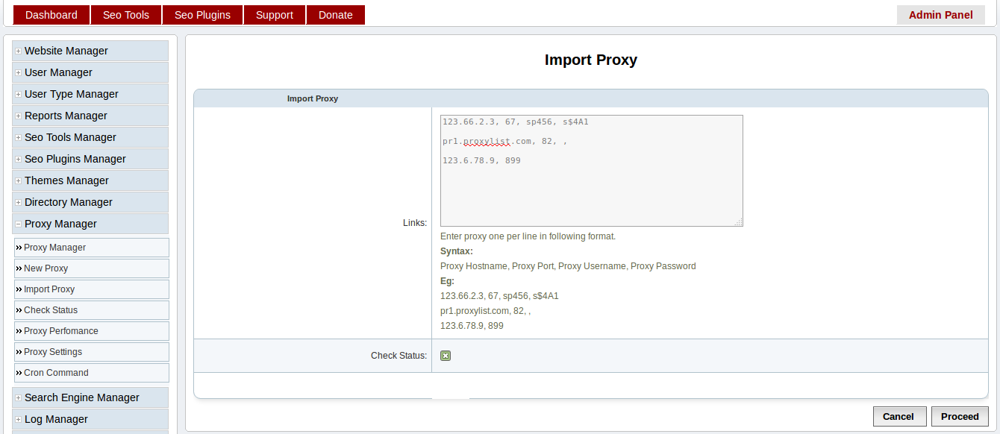
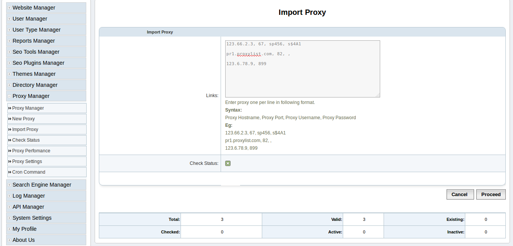
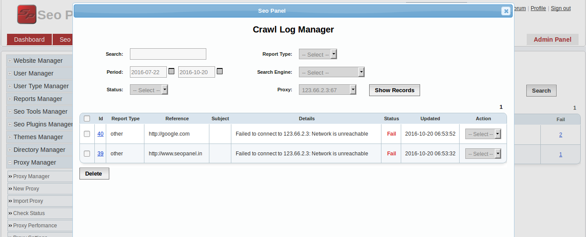

Proxy Manager¶
Proxy is mainly used, when you have to generate reports for many keywords and websites. It will make a balanced query to search engines and will help to get more efficient reports.
Check this link, to get efficient proxy list to add in your seo panel => Click Here to Get Proxy
New Proxy¶
This section is to create proxy under websites
Go to Admin Panel => Proxy Manager => New Proxy
Enter details as following screen shot

- Proxy - Enter proxy server domain or IP Eg: proxy-test.com
- Port - The port number used to access proxy server
- Authentication - Enable proxy server authentication using username and password in the form
- Proxy Username - The username to access proxy server
- Proxy Password - The password to access proxy server
You can also edit, activate, deactivate, check status and delete proxy using options available in the Proxy Manager page.
Import Proxy¶
You can also import group of proxy to seo panel using this feature.
Go to Admin Panel => Proxy Manager => Import Proxy
Enter details as following screen shot
Links - Enter proxy one per line in comma seperated format
Input format:
Proxy Hostname, Proxy Port, Proxy Username, Proxy Password
Eg:
- 123.66.2.3, 67, sp456, s$4A1
pr1.proxylist.com, 82, ,
Check Status - Checked to enable verification of current status of proxy during import. If it is checked, import will take more time.
Proceed with the values in the form, you will get following window with the stats of import.

Check Status¶
This section will help you to check status of proxy list added in seo panel
Go to Admin Panel => Proxy Manager => Check Status
Enter details as following screen shot
- Proxy - Select type of proxy needs to be verified. If not selected it will check all proxy list.
- Check Status - Click on this button will trigger verification of proxy list. It will take some time to complete. You will get summary as above screen shot after execution.
Proxy Settings¶
Next step is to update proxy settings.
Go to Admin Panel => Proxy Manager => Proxy Settings
Enter details as following screen shot

- Enable Proxy: - This will enable to use a random proxy in each system crawl or query
- Enable HTTP Proxy Tunnel: - Tunneling needs to be enabled / disabled according to your proxy settings
- Deactivate Proxy When Crawling Failed: - This will make a particular proxy disabled, if any crawling failed with that proxy
- Check With Another Proxy When Crawling Failed: - If one crawling failed with a proxy, this will enable to use another proxy to resume crawling of same request.
- Maximum number of proxies used in single execution: - If above settings is enabled, this will limit number of proxies should be used to check a failed crawl.
Proxy Perfomance¶
In this section you can see proxy perfomance.
Go to Admin Panel => Proxy Manager => Proxy Perfomance
Check details in following screen shot

The reports are displayed in default order by number of success requests sent by a proxy
- Request Count - The number of requests sent using a proxy
- Success - The number of success requests sent using a proxy
- Fail - The number of failed requests sent using a proxy
If we click on the above number, it will show more detailed reports.
By checking the reports, we can easily find out which proxy is failed more. We can disable it by clicking on the proxy name and edit proxy properties.
Cron Command¶
Cron job is the best method to check status of proxy periodically.
Go to Admin Panel => Proxy Manager => Cron Command
Add following command to your cron tab
0 0,6 * * * php /opt/lampp/htdocs/seopanel/proxycheckercron.php